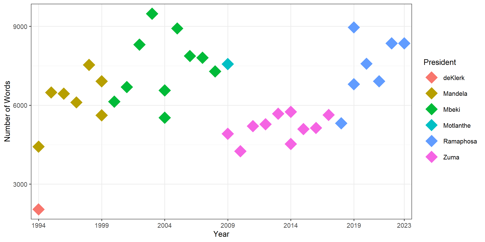
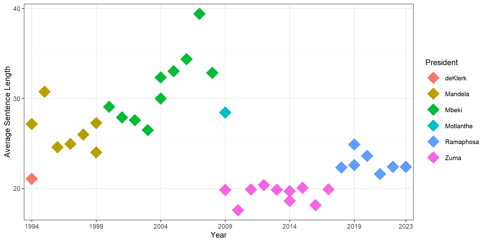
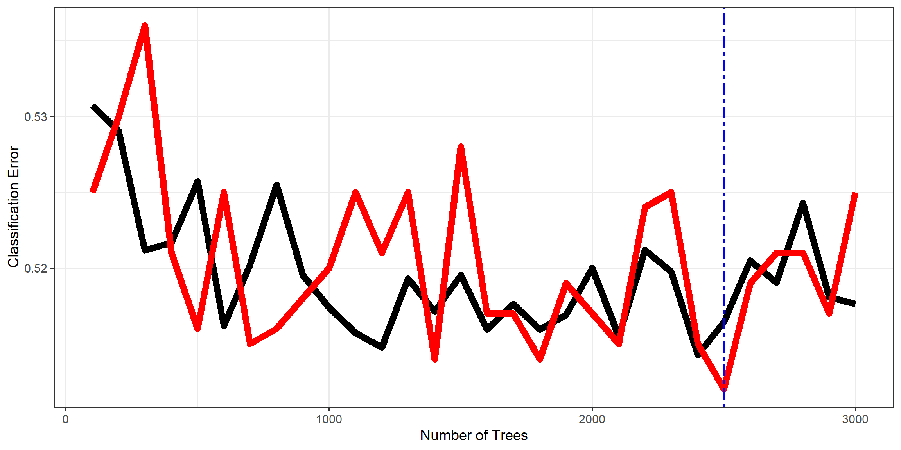
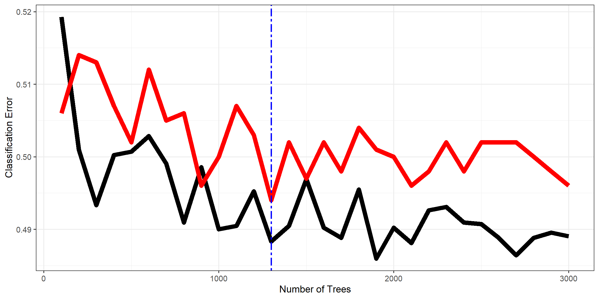
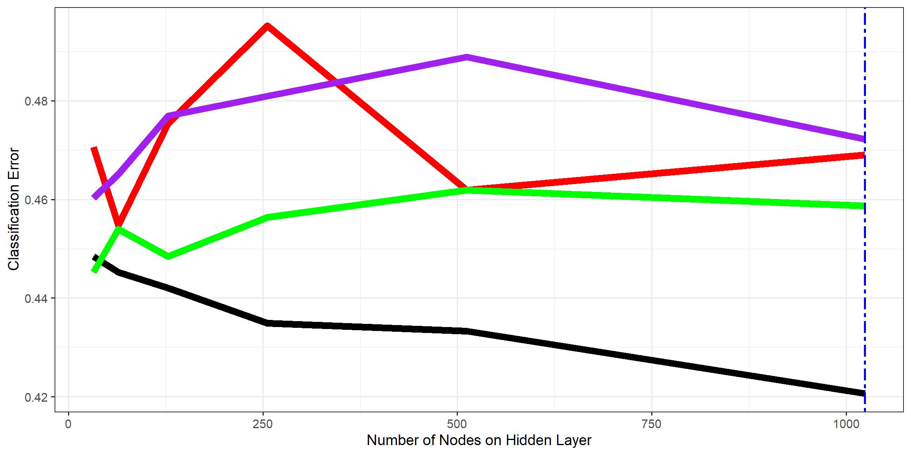
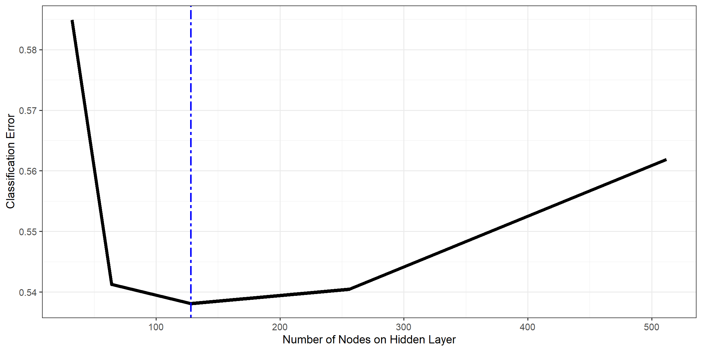

Predicting the President: An Exploration and Comparison of Classification algorithms.
1. Introduction.
The SONA (State of the Nation Address) is a highlight of the South African political calendar. Every year, and after every election, the South African president addresses parliament and the nation with a speech that highlights what the government has achieved over the past year and outlines the government’s important objectives over the next year. Since the beginning of 1994, there have been 36 SONA’s, by 6 presidents, each with their own distinct tone and diction. The distinct nature of these speeches and their structure suggest that given a sentence from one of the speeches, the president who delivered it is identifiable to a human who has seen the speeches before. Could predictive classification models identify the president solely from a sentence from one of their speeches?
Analysis of the speeches given by presidents of other countries is abundant in the literature [see Miranda and Bringula (2021); Najarzadegan, Dabaghi, and Eslami-Rasekh (2017); Budiharto and Meiliana (2018)]. These analyses focus on sentiment analysis and topic modelling. The purpose of this paper is to compare the ability of three classification algorithms to predict the South African president given a sentence from one of their speeches. The three classification algorithms that are assessed in this paper are: Classification Trees, Random Forests and Feed Forward Neural Networks.
2. Methodology.
Data
Each of the 36 SONA’s undergo cleaning and manipulation to create datasets that are usable by the classification models in the prediction process.
Data Cleaning
One data frame is created using all 36 speeches. The dataframe consists of the speech identifier (in this instance, the name of the text file for that speech), and the speech itself. The name of the president who gave the speech and the year the speech was delivered are extracted from the speech identifier. The speech date is added to the dataframe by extracting it from the speech itself. Additionally, all unnecessary text is removed from each of the speeches.
Data Manipulation
The cleaned data set is then used to seperate each of the speeches into their sentences using tokenisation. The apostrophes and numbers are removed from each sentence in the data frame. A sentence identifier is added to the data frame. Columns are removed from the sentence data frame such that it only consists of the president name, the year of the speech, the speech sentences and the sentence identifier.
The sentence data frame is then used to create a word data frame that consists of the words found in each of the speech sentences. This is similarly done using tokenisation. Each word now has it’s own row in the dataframe, along with its sentence identifier, the name of the president who said the sentence the word is in and the year of the speech. Stop words are removed from the dataframe to improve training model efficiency, and increase the separability between the different president’s speeches.
Bag of Words Models
Two forms of word frequencies are considered and compared in this paper. Count Frequency and Term Frequency–Inverse Document Frequency (TF-IDF). Count frequency is a measure of the number of occurences of the word in the data frame. TF-IDF use a combination of relative frequencies and document frequencies to assign a score to each word in the data frame. For these frequency data frames to be usable by the classification algorithms for predictive modelling, the data frames have to be structured such that each word has its own column with its frequencies. These frequency data frames are then joined with the sentence data frame to form the model data frames. These new data frames have a column for each word in the word data frame. Each row of the model data frame reflects a sentence said by one of the presidents. The president column highlights the surname of the president who said that sentence. The remaining columns represent the count frequency or TF-IDF of each word in that sentence. These data frames can then be used to train classification algorithms to predict the president who said the sentence. For the rest of this paper, when the bag of words data frame is referenced, it refers to the data frame with word columns that hold the count frequency of the words in the sentence. In contrast, the TF-IDF data frame refers to data set with word columns that contain the tf-id frequency of the word in the sentence.
Classification Algorithms
Classification Trees
Classification Trees are one of the more simple predictive models to implement and use. They utilize recursive partitioning to split the observations into their different classes based on the most influential variables. The end result is a tree-like structure with a variable on each “branch” that indicates a partition in the feature space. The tree can then be used to classify an observation it has not seen before based on where it resides in the feature space.
Random Forests
Random Forests are an extension of decision trees, and thus classification trees. Where as Classification Trees classify an observation based off of a singular decision tree, random forests use an ensemble of classification trees to decide the class an observation belongs to. Each tree is formed using a subset of the variables in the data and a sample of the observations to ensure tree variation in the forest.
Feed Forward Neural Network
Feed Forward Neural Networks are one of the more complex predictive models used and implemented in this study. The classification feed forward neural networks take in a a data frame of predictors, pass them through a hidden layer or multiple hidden layers of nodes (each with their own weight), and outputs the probability of belonging to each class. Activation functions are applied to both the hidden layer and the output layer. The activation function applied to the hidden layers allow for more complex relationship identification by the network. The activation function applied to output layer ensures that the predictions are in the same form as the response. For classification problems, the output layer has the soft-max activation function applied to it. The classification network uses a cross entropy loss function to measure the performance of the network. It then uses an backpropagation to find the weights that most minimise the loss function.
Keras Data Pre-Processing
To implement the Feed Forward Neural Network in R, using Keras, the data is required to undergo further pre-processing. The president class variable is transformed into an integer variable and one hot encoded. One hot encoding transforms the categorical single response column into multiple binary response columns, one for each president in the data frame. Additionally, the BOW data is scaled to make it compatible with Keras.
Training, Validation and Testing
Both the bag of words data frame and the TF-IDF data frame are split into training, validation and test data frames as follows:
- 70% of the observations from each president are sampled for the training data frame.
- 20% for the validation data frame.
- 10% for the test data frame.
These data frames are created once, and used consistently through out the predictive modelling process to ensure evaluation consistency across classification algorithms.
3. Results and Discussion.
Exploratory Data Analysis
Before any predictive models are implemented, exploratory data analysis (EDA) is conducted on the speeches. The EDA highlights numerous interesting and substantial aspects of the speech data set. Below, Figure 1 shows the number of words spoken by each president in each of the speeches. There are many fascinating features of each President’s speeches that are identifiable. President Zuma uses fewer words in his SONA’s in comparison to the other presidents. The address given by de Klerk, pre elections in 1994, is the shortest speech, by a substantial margin. President Mbeki and President Ramaphosa have the most words in their speeches and follow a similar sentiment in their first SONA after replacing the previous president. President Mbeki’s first two speeches are comparable in length to President Mandela’s speeches. Equivalently, President Ramaphosa’s first address has a similar length to President Zuma’s speeches. The consistency of speech length to previous president’s is seemingly an important and notable factor for speech writers when producing the first address for a newly elected president.
Figure 2 below shows the average length of a sentence in each of the SONAs over the years. They are colour coded by the president who delivered the speech. The figure further highlights the stand out sentiments from above while introducing new concepts of interest. President Zuma had the shortest speeches by word count and these speeches were on average comprised of short sentences. In contrast, President Mbeki tended to have his speeches comprised of longer sentences. It is interesting to note the immense contrast in average sentence length between President Mbeki’s first term as president (pre 2004) and his second term as president (post 2004). In his second term, his average sentence length increases by five words. Finally, the juxtaposition of the positioning of President Ramaphosa’s speeches in the plots below and above is intriguing. President Ramaphosa’s speech length rivals President Mbeki. However, the average length of the sentences used in his SONAs are closer to President Zuma. This is a purposeful decision in the speech writing process. Further, speech analysis and research is necessary to ascertain the likely reason for this decision.

Imbalanced Data
The most important feature highlighted in the exploratory data analysis above is that the data frame only has one SONA for both de Klerk and President Motlanthe. The reason why it is notable is that the sentence data frame is imbalanced. The multi-year presidents have over 1500 sentences in the data frame. In contrast, de Klerk and President Motlanthe both have under 300 sentences. If the entire data frame is used as is, these presidents would be disproportionately represented. The classification algorithms are likely to struggle to capture the class structure of sentences and more likely to develop a bias towards the presidents with the majority of the observations in the data frame. There are numerous methods of dealing with the imbalanced data. Oversampling algorithms would increase the representation of the two aforementioned presidents in the data set. However, the sentence count discrepancy between de Klerk and President Motlanthe and the other presidents suggest that the oversampling algorithms would need to create or sample vastly more sentence observations than observations in the data frame for these two presidents. Mohammed, Rawashdeh, and Abdullah (2020) highlights that the increase in the risk of overfitting the data is a severe limitation of oversampling algorithms. Therefore, de Klerk and President Motlanthe’s observations are removed from both the Bag of Words data frame and the TF-IDF data frame. Additionally, to deal with the imbalanced class structure of the data set among the remaining four presidents, 1500 sentence observations are randomly sampled from each president’s observations in both data frames. These 6000 observations are used to create the training, validation and testing data frames used in the predictive modelling process of the classification algorithms.
Classification Trees
A full classification tree is fit to both the bag of words training data frame and the TF-IDF training data frame. The misclassification rate for both of the two models on the training data is shown below in Table 1. Both models perform poorly on their training data. The bag of words (BOW) model misclassified 72% of all the observations. The TF-IDF model misclassified 70% of the data frame’s observations.
| Training Misclassification % | |
|---|---|
| BOW | 72 |
| TF-IDF | 70.2 |
These models perform slightly better than a single president classification algorithm (attribute all sentences to one president) that would have a misclassification rate of 75%. Table 2 is a confusion matrix that highlights how the classification tree algorithm classifies observations in the BOW training data (columns) in comparison to the actual classification of the observations (rows). The table accentuates the largest issue the model (and the TF-IDF model) has. The majority of the sentences have been classified for President Ramaphosa. The model has then found multiple small splits in the feature space that has allowed it to identify a small subset of President Zuma and President Mbeki’s observations. Additionally, the model does not classify any of the sentences for President Mandela.
| Mandela | Mbeki | Ramaphosa | Zuma | |
|---|---|---|---|---|
| Mandela | 0 | 31 | 1019 | 0 |
| Mbeki | 0 | 74 | 975 | 1 |
| Ramaphosa | 0 | 1 | 1049 | 0 |
| Zuma | 0 | 10 | 985 | 55 |
Random Forests
Validation Analysis
The classification random forest modelling process requires validation analysis to choose the optimal set of parameters that will minimise the misclassification rate for the final model on the data. In this study, the optimal number of trees in each random forest is crucial to the model’s classification performance. Figure 3 shows the misclassification rate for random forest models on both the training and validation BOW data as the number of trees in the model increase from 100 trees to 3000 trees. The significant overlap between the rates for both the training data and the validation data suggests that the model is struggling to capture the class structure in the data and has not settled. The two main reasons for this issue are that the random forest model is ill-suited to deal with the data frame as is or a greater number of trees need to be considered in the BOW random forest model. Nonetheless, the random forest model with 2500 trees produces the lowest validation misclassification rate for the BOW data. Similarly, Figure 4 shows the misclassification rate for random forest models on both the training and validation TF-IDF data for increasing numbers of trees. The difference in error between the training data and the validation data is more pronounced here, in contrast to the BOW random forest models. The TF-IDF random forest model with 1300 trees, misclassifies the least amount of sentences in the validation data.


Models with Optimal Parameters
The optimal number of trees for the models of both data sets, found using validation analysis, are used to fit two random forest models on the combined training and validation data.
The misclassification rate for both of the two models on the combined data sets is shown below in Table 3. The random forest models improve on the misclassification rate, in contrast to the classification trees. These models misclassify under 50% of the sentences in their specified data sets. The bag of words (BOW) random forest model misclassified 49.7% of the observations. The TF-IDF random forest model misclassified 48.8% of the data frame’s observations.
| Model Misclassification % | |
|---|---|
| BOW | 49.7 |
| TF-IDF | 48.8 |
Table 4 shows confusion matrices that highlight how the random forest classification algorithm classifies observations in the data (columns) in comparison to the actual classification of the observations (rows) for both data sets. Table 4 (a) shows the classification contrast of the optimal BOW random forest model. Similarly, Table 4 (b) highlights the difference in classification for the optimal TF-IDF random forest model. Alike to the issues that arose for the BOW Classification Tree model, the BOW random forest model is biased towards a president. Over 50% of sentences in the BOW data frame are classified as coming from a speech by President Zuma. In contrast, the TF-IDF random forest model does not suffer from the same problem. The classification from its model on its data is far more evenly spread, which suggests that it is far more successful in identifying the underlying class structure. However, the misclassification rate in Table 3 highlights that the performance of these these models are incredibly similar.
Table 4. Random Forest Confusion Matrices
| Mandela | Mbeki | Ramaphosa | Zuma | |
|---|---|---|---|---|
| Mandela | 467 | 312 | 99 | 487 |
| Mbeki | 192 | 636 | 103 | 434 |
| Ramaphosa | 91 | 132 | 640 | 502 |
| Zuma | 69 | 138 | 154 | 1004 |
| Mandela | Mbeki | Ramaphosa | Zuma | |
|---|---|---|---|---|
| Mandela | 582 | 382 | 87 | 314 |
| Mbeki | 238 | 720 | 113 | 294 |
| Ramaphosa | 114 | 205 | 712 | 334 |
| Zuma | 150 | 220 | 215 | 780 |
Feed Forward Neural Network
Hyperparameter Tuning
Hyperparameter Tuning is a crucial facet of the neural network modelling process. In comparison to the random forests, where the only hyperparameter optimised for the models was the number of trees, these feed forward neural networks require the optimisation of multiple parameters to find the model that best classifies the speech sentences to the president. The hyperparameters optimised for the purpose of the neural networks in this study are the hidden layer activation functions, the number of nodes on the hidden layer, the dropout rate, the batch size and the number of hidden layers.
Activation Functions, Nodes, Dropout and Batch Size
Both the BOW and the TF-IDF training and validation data sets were used to choose the optimal number of hidden layer nodes, the optimal dropout rate and the optimal batch size for each of their respective feed forward neural network models. The optimal hidden layer activation function is found for the TF-IDF data and used for both of the models. The hyperparameters and the considered values are shown below in Table 5.
| Activation | Nodes | Dropout % | Batch Size |
|---|---|---|---|
| ReLu | 32 | 10 | 16 |
| SeLu | 64 | 25 | 32 |
| TanH | 128 | 40 | 64 |
| Sigmoid | 256 | 55 | 128 |
| - | 512 | 70 | 256 |
| - | 1024 | 85 | 512 |
The validation misclassification rate of TF-IDF feed forward neural networks for all 864 combinations of these hyperparameters are found. Figure 5 shows the performance of a subset of these TF-IDF neural networks as the number of nodes on the hidden layer increase from 32 to 1024. The batch size and the dropout % are fixed at their optimally found values of 16 and 10%. The feed forward neural networks using the Rectified Linear Unit (ReLu) activation function on the single hidden layer are the only group of networks that improve in performance as the number of nodes on the hidden layer increase. All of the neural networks with the other activation functions perform better in terms of classification with a smaller number of nodes on the hidden layer. Additionally, the discrepancy in the minimum validation misclassification rate between the ReLu activation function and the other activation functions is noticeable. The optimal activation function to use on the hidden layer is thus the ReLu activation function. 1024 nodes is the optimal number for the hidden layer of the TF-IDF feed forward neural network model.

The ReLu activation function is the only activation considered in the tuning process of the hyperparameters for the BOW Feed Forward Neural Network. Figure 6 shows the validation misclassification rate, as the number of nodes on the hidden layer increase, for a subset of the neural networks with the optimally chosen batch size fixed at 512 and the dropout rate fixed at the optimal 55%. The optimal number of nodes to have on the hidden layer, according to the BOW validation data, is 128.

Models with Optimal Parameters
The optimal hyperparameters used to train and fit the two feed forward neural networks, in addition to the validation misclassification rate of the models, are shown in Table 7. The drastic difference between the performance of the optimal feed forward neural network on the BOW and the TF-IDF data is sizable. The BOW neural network classifies close to 55% of the sentences incorrectly. In contrast, the TF-IDF neural network only misclassifies close to 40% of the sentences in the TF-IDF validation data frame.
| Activation | Nodes | Dropout % | Batch Size | Hidden Layers | Misclass % | |
|---|---|---|---|---|---|---|
| BOW | ReLu | 128 | 55 | 512 | 1 | 54.4 |
| TF-IDF | ReLu | 1024 | 10 | 16 | 1 | 42.3 |
Test Performance
Each of the classification model’s considered in this study have their predictive capabilities tested with the respective test data sets. The misclassification rates for the BOW models are calculated on the BOW test data. Similarly, the performance of the TF-IDF models is calculated on the TF-IDF test data. Table 8 shows the test misclassification rates for all six of the classification models, ranked overall from best to worst. The TF-IDF neural network is the best classifier produced in this study. It accurately misclassifies 40% of the sentences in the test data to the president who used them in a SONA. Conversely, the BOW Classification Tree is the worst performing model. It incorrectly classifies over 71% of test sentences.
| Test Misclassification % | |
|---|---|
| Neural Network (TF-IDF) | 40.0 |
| Random Forest (TF-IDF) | 47.4 |
| Random Forest (BOW) | 47.8 |
| Neural Network (BOW) | 54.4 |
| Classificiation Tree (TF-IDF) | 70.2 |
| Classificiation Tree (BOW) | 71.7 |
The most interesting feature of the table is that the BOW random forest outperforms the BOW neural network in classifying sentences to presidents by over 6%. Table 9 shows the confusion matrices comparing the predicted president classification (columns) to the actual president classification (rows) for the test data for both models. Table 9 (b) highlights that the BOW neural network is seemingly classifying close to 50% of the test sentences as from President Mandela. This is similar to the issues experienced by both the BOW classification tree model and the BOW random forest model. Each of these BOW models exhibit a strong bias towards a president. Even though it is not as pronounced in Table 9 (a), the BOW random forest model’s bias towards classifying sentences for President Zuma is clear. These results suggest that all of the BOW models are struggling to identify the true class structure in the BOW sentence data. The consistency of the problem indicates that the issue is with the construction of the BOW data frame with the count frequencies and not the models themselves.
Table 9. BOW Test Confusion Matrices
| Mandela | Mbeki | Ramaphosa | Zuma | |
|---|---|---|---|---|
| Mandela | 52 | 29 | 8 | 46 |
| Mbeki | 18 | 69 | 9 | 39 |
| Ramaphosa | 11 | 18 | 68 | 38 |
| Zuma | 6 | 13 | 23 | 93 |
| Mandela | Mbeki | Ramaphosa | Zuma | |
|---|---|---|---|---|
| Mandela | 103 | 19 | 6 | 7 |
| Mbeki | 68 | 43 | 7 | 17 |
| Ramaphosa | 57 | 11 | 56 | 11 |
| Zuma | 59 | 14 | 18 | 44 |
4. Conclusion.
This study seeked to find the best performing classification algorithm for identifying the president given a sentence from one of their State of the Nation addresses. Three classification algorithms were considered for two frequency variations of the speech sentence data. The feed forward neural network was the best performing classifier for the Term Frequency–Inverse Document Frequency data and overall. The classification trees performed marginally better than a single president classification algorithm for both the Bag of Words data and the TF-IDF data. The random forest model produced a smaller misclassification rate than the feed forward neural network for the BOW data. The feed forward neural network appears to be the best classifier to use for sentence identification when used in conjunction with the TF-IDF weighted scores. None of the models perform well enough to the extent that they could be used confidently to classify a SONA sentence from a president. Further research, should explore why count frequencies perform worse than TF-IDF scores across classification algorithms. Additionally, further and more thorough hyperparameter tuning should be investigated for the feed forward neural networks in an attempt to improve their classification performance. In conclusion, there are benefits to using classification algorithms to identify the president from a SONA sentence, however, further explorative research is necessary to optimise the performance of these models.
References.
Budiharto, Widodo, and Meiliana Meiliana. 2018. “Prediction and Analysis of Indonesia Presidential Election from Twitter Using Sentiment Analysis.” Journal of Big Data 5 (1): 1–10.
Miranda, John Paul P, and Rex P Bringula. 2021. “Exploring Philippine Presidents’ Speeches: A Sentiment Analysis and Topic Modeling Approach.” Cogent Social Sciences 7 (1): 1932030.
Mohammed, Roweida, Jumanah Rawashdeh, and Malak Abdullah. 2020. “Machine Learning with Oversampling and Undersampling Techniques: Overview Study and Experimental Results.” In 2020 11th International Conference on Information and Communication Systems (ICICS), 243–48. IEEE.
Najarzadegan, Sahar, Azizollah Dabaghi, and Abbass Eslami-Rasekh. 2017. “A Critical Discourse Analysis of Iran and US Presidential Speeches at the UN: The Sociopragmatic Functions.” Theory and Practice in Language Studies 7 (9): 764.
R Core Team. 2022. R: A Language and Environment for Statistical Computing. Vienna, Austria: R Foundation for Statistical Computing. https://www.R-project.org/.
Wickham, Hadley. 2016. Ggplot2: Elegant Graphics for Data Analysis. Springer-Verlag New York. https://ggplot2.tidyverse.org.